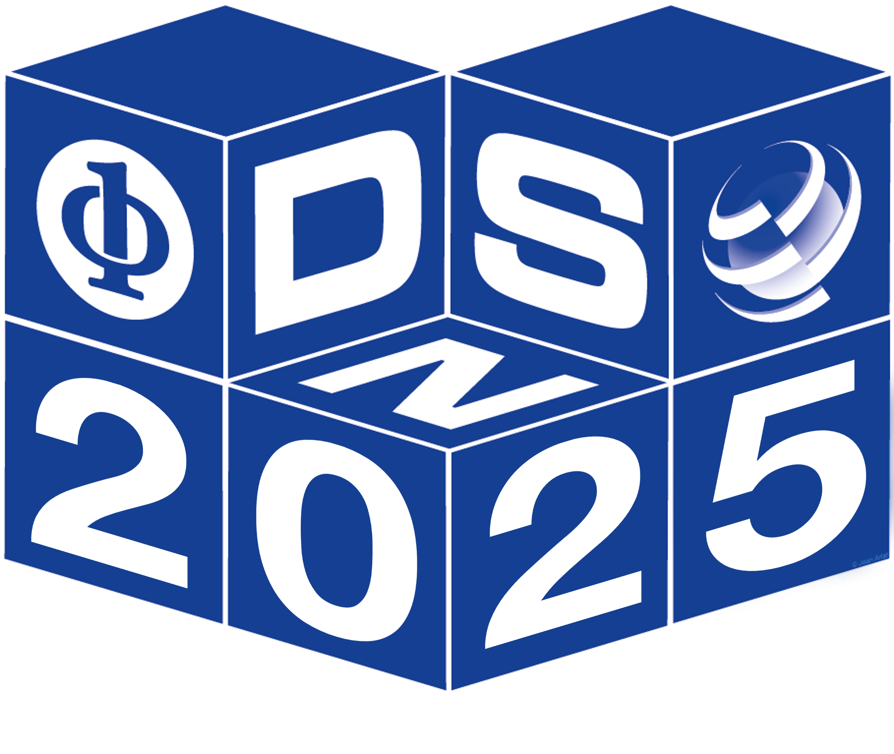

|
DSML 2025
Dependable and Secure Machine Learning
|

|
Workshop Program
| 9:00 |
Welcome to DSN-DSML 2025
(Session Chair: Xugui Zhou)
|
| |
Session 1: Keynote Talk
|
09:15
10:15
|
Dependability and Security of Machine Learning: Old Wine in a New Bottle or Not?
Karthik Pattabiraman, Professor, Electrical and Computer Engineering, University of British Columbia (UBC), Canada
Q&A
|
| 10:30 |
Coffee Break |
| |
Session 2: Adversarial Machine Learning and Defenses
(Session Chair: Zhengping Jay Luo)
|
11:00
11:22
11:44
12:06
|
Revisiting Adversarial Perception Attacks and Defense Methods on Autonomous Driving Systems
Cheng Chen (Louisiana State University), Yuhong Wang (Louisiana State University), Nafis S Munir (Louisiana State University), Xiangwei Zhou (Louisiana State University),
Xugui Zhou (Louisiana State University)
On the Transferability of Adversarial Attacks from CNNs to Variants of ChatGPT4
Niklas Bunzel (Fraunhofer Institute for Secure Information Technology)
Learning from the Good Ones: Risk Profiling-Based Defenses Against Evasion Attacks on DNNs
Mohammed Elnawawy (University of British Columbia),
Gargi Mitra (University of British Columbia),
Shahrear Iqbal (National Research Council Canada),
Karthik Pattabiraman (University of British Columbia)
Audio Jailbreak Attacks: Exposing Vulnerabilities in SpeechGPT in a White-Box Framework
Binhao Ma (University of Missouri-Kansas City),
Hanqing Guo (University of Hawaii at Mānoa),
Zhengping Jay Luo (Rider University) ,
Rui Duan (University of Missouri-Kansas city)
|
| 12:30 |
Lunch Break |
| |
Session 3: Keynote Talk
(Session Chair: Xugui Zhou)
|
14:00
15:00
|
TBD
Evgenia Smirni, Chair and Sidney P. Chockley Professor, Computer Science, College of William and Mary, USA
Q&A
|
| |
Session 3: TBD
(Session Chair: Niklas Bunzel)
|
|
15:10
|
FHE ML Tuxedo: A Tailored Wrapper Architecture for Homomorphic Encryption in Machine Learning
Martin Nocker (Josef Ressel Centre for Security Analysis of IoT Devices, MCI The Entrepreneurial School, Innsbruck, Austria),
Linus Henke (Josef Ressel Centre for Security Analysis of IoT Devices, MCI The Entrepreneurial School, Innsbruck, Austria),
Pascal Schöttle (Josef Ressel Centre for Security Analysis of IoT Devices, MCI The Entrepreneurial School, Innsbruck, Austria)
|
| 15:30 |
Coffee Break |
| |
Session 4: Trust and Generative AI Systems
(Session Chair: Karthik Pattabiraman)
|
16:00
16:20
16:40
17:00
17:20
|
Hallucination Detection in LLMs via Beam Search Sampling and Semantic Consistency Analysis
Radouane Bouchekir (fortiss), Fathiyeh Faghih (fortiss), Tewodros Beyene (fortiss)
Securing AI Code Generation Through Automated Pattern-Based Patching
Francesco Altiero (Università degli Studi di Napoli Federico II),
Domenico Cotroneo (Università degli Studi di Napoli Federico II),
Roberta De Luca (Università degli Studi di Napoli Federico II),
Pietro Liguori (Università degli Studi di Napoli Federico II)
Decoding Neighborhood Environments with Large Language Models
Andrew Cart (University of North Carolina at Pembroke),
Shaohu Zhang (University of North Carolina at Pembroke),
Melanie Escue (University of North Carolina at Pembroke),
Xugui Zhou (Louisiana State University),
Haitao Zhao (University of North Carolina at Pembroke),
Prashanth BusiReddyGari (University of North Carolina at Pembroke),
Beiyu Lin (University of Oklahoma),
Shuang Li (North Carolina A&T State University)
A Lightweight Reputation-Based Mechanism for Incentivizing Cooperation in Decentralized Federated Learning
Kavindu Bagchi (Purdue University),
Suraj Mahangade (Purdue University),
Saurabh Bagchi (Purdue University)
Discussion and Closing Remarks
|
|
|
|

Dependability and Security of Machine Learning: Old Wine in a New Bottle or Not?
Karthik Pattabiraman, Professor, Electrical and Computer Engineering, University of British Columbia (UBC), Canada
Abstract: In the last decade, there has been a surge of research in the dependability and security of Machine Learning (ML), with many papers, workshops and conferences in this area (including DSML). ML has rapidly become the number one topic in the dependability and security research communities today, and has also gathered wide attention from policy makers and Governments. Yet, there have been few attempts to put ML dependability and security techniques in the larger research context of dependability and security research, and understand what is truly unique about them. In this talk, I will argue that such a perspective is important both for understanding the unique aspects of ML, and learning from the rich history of the dependability and security research areas. I will present examples of some of the techniques we have developed in my research group, and how they relate to the broader area. I will conclude by presenting my vision of the future challenges and opportunities in this area.
Speaker Bio: Karthik Pattabiraman is a Professor of Electrical and Computer Engineering (ECE) at the University of British Columbia (UBC). He received his PhD in 2009 in Computer Science from the University of Illinois at Urbana-Champaign (UIUC), an MS in Computer Science also from UIUC in 2004, and B. Tech. from the University of Madras, India, in 2001. Before joining UBC in 2010, he was a postdoctoral researcher at Microsoft Research (MSR), Redmond. Karthik’s research interests are in dependable computer systems, software security, cyber-physical systems, and software engineering. Karthik has won awards such as the Inaugural IEEE Rising Star in Dependability Award, the Jean Claude Laprie award in dependable computing, UIUC CS department’s early career alumni achievement award, UBC-wide Killam mentoring excellence award, UBC-wide Killam Faculty Research Prize and the Killam Faculty Research Fellowship, NSERC Discovery Accelerator Supplement (DAS) in Canada, and the William Carter PhD Dissertation Award. Karthik is a distinguished member of the ACM, a distinguished contributor and distinguished visitor of the IEEE Computer Society, and a professional engineer (P.Eng.).

TBD
Abstract: TBD
Speaker Bio: TBD
|
|